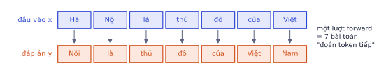
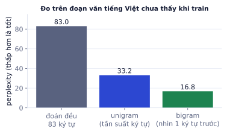
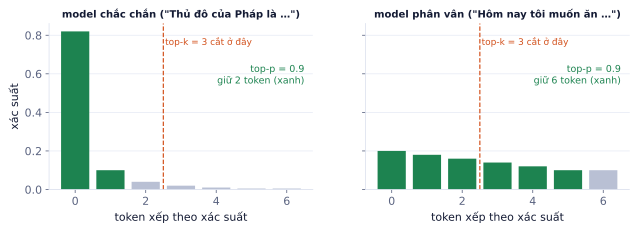
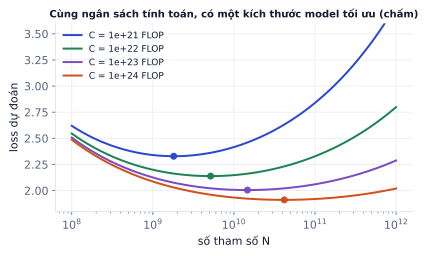

Bài 1
Perplexity
tính tayLời giải
exp(2) ≈ 7.39: model phân vân như giữa khoảng 7 lựa chọn. Model chưa train đoán đều 65 ký tự có loss ln 65 ≈ 4.17, đúng con số bạn nên thấy ở bước đầu của Lab 3.
GPT, Claude, Llama đều được pretrain bằng một nhiệm vụ đơn giản đến bất ngờ: đoán token tiếp theo. Bài này giải thích nhiệm vụ đó, cách đo model ngôn ngữ bằng perplexity, các cách lấy mẫu khi sinh văn bản (temperature, top-k, top-p), sự khác nhau giữa ba họ BERT, GPT, T5, và quy luật "model càng lớn càng tốt" vận hành thế nào. Phần thực hành, bạn train một GPT nhỏ biết viết tiếng Việt.
Nhiệm vụ đoán token tiếp theo là lý do LLM tồn tại: nó biến toàn bộ văn bản trên internet thành dữ liệu train mà không cần ai gán nhãn. Hiểu nhiệm vụ này giúp bạn hiểu cả sức mạnh (kiến thức rộng) lẫn điểm yếu (bịa ra câu nghe hợp lý) của LLM.
Cho chuỗi token x₁ … xₜ, model dự đoán phân phối xác suất của xₜ₊₁ trên toàn bộ từ vựng. Một câu được sinh ra là tích các xác suất có điều kiện:
p(x₁, x₂, …, x_T) = p(x₁) · p(x₂ | x₁) · p(x₃ | x₁, x₂) · … · p(x_T | x₁ … x_T₋₁)
Đây là maximum likelihood (P0.5) áp dụng cho văn bản: train để văn bản thật có xác suất cao nhất dưới model. Lấy −log và trung bình, ta có loss cross-entropy:
L = −(1/T) Σₜ log p(xₜ₊₁ | x₁ … xₜ)

import math, torch, torch.nn as nn, torch.nn.functional as F
torch.manual_seed(0)
V = 50 # kích thước từ vựng (nhỏ để chạy thử)
tokens = torch.randint(0, V, (2, 8)) # 2 chuỗi, mỗi chuỗi 8 token
model = nn.Sequential(nn.Embedding(V, 32), nn.Linear(32, V)) # "model" tối giản, chưa train
x = tokens[:, :-1] # (B, T) đầu vào
y = tokens[:, 1:] # (B, T) đáp án: dịch trái 1 vị trí
logits = model(x) # (B, T, V)
loss = F.cross_entropy(logits.reshape(-1, V), y.reshape(-1))
print(x.shape, y.shape, logits.shape)
print(f"loss {loss.item():.2f}, model đoán bừa thì khoảng ln V = {math.log(V):.2f}")
torch.Size([2, 7]) torch.Size([2, 7]) torch.Size([2, 7, 50]) loss 3.97, model đoán bừa thì khoảng ln V = 3.91
Để đoán đúng token tiếp theo trên dữ liệu đa dạng, model buộc phải học:
| Câu cần đoán tiếp | Model phải biết |
|---|---|
| "Các con mèo đang …" | ngữ pháp: chủ ngữ số nhiều |
| "Thủ đô của Nhật Bản là …" | kiến thức thế giới |
| "23 + 19 = …" | tính toán |
| "Anh ấy làm rơi cốc nước nên sàn nhà bị …" | quan hệ nhân quả |
| "def fibonacci(n): …" | lập trình |
Mặt trái: model được thưởng vì viết ra token nghe hợp lý, không phải token đúng sự thật. Khi không biết, nó vẫn sinh ra câu trôi chảy: đó là gốc của hallucination (bịa thông tin), chủ đề quan trọng ở P4.
Loss 2.3 hay 1.8 khó hình dung. Perplexity đổi loss thành một con số có ý nghĩa trực quan, và là metric chuẩn để so model ngôn ngữ trong bài báo.
perplexity = exp(loss trung bình)
Perplexity là "model đang phân vân giữa bao nhiêu lựa chọn" ở mỗi bước, tính trung bình. Model đoán đều trên K lựa chọn có loss = ln K, nên perplexity = K.
Train ba model ngôn ngữ cấp ký tự rất đơn giản trên vài đoạn văn tiếng Việt (83 ký tự khác nhau), đo trên một đoạn chưa thấy:
| Model | Cách đoán | Perplexity |
|---|---|---|
| Đoán đều | mọi ký tự xác suất 1/83 | 83.0 |
| Unigram | theo tần suất ký tự ("n", "h", dấu cách hay gặp) | 33.2 |
| Bigram | theo ký tự liền trước ("n" thường theo sau là "g", "h") | 16.8 |
Mỗi khi model nhìn thêm ngữ cảnh, perplexity giảm: nó bớt phân vân. Một Transformer nhìn hàng trăm ký tự trước sẽ giảm xuống còn vài đơn vị.

| Loss trung bình (log tự nhiên) | 0.5 | 1.0 | 1.5 | 3.0 |
|---|---|---|---|---|
| Perplexity | 1.65 | 2.72 | 4.48 | 20.1 |
So perplexity giữa hai tokenizer khác nhau. Perplexity tính theo token. Tokenizer cắt nhỏ hơn (nhiều token hơn cho cùng câu) thì mỗi token dễ đoán hơn, perplexity thấp hơn, dù model không tốt hơn. Chỉ so perplexity giữa các model dùng cùng tokenizer và cùng tập đánh giá; muốn so khác tokenizer thì quy về "bit trên mỗi byte" hoặc "trên mỗi ký tự".
Cùng một model, cách chọn token khi sinh quyết định câu trả lời lặp đi lặp lại, chính xác, hay sáng tạo. Các tham số temperature, top_p bạn gặp khi gọi API LLM chính là những thứ trong mục này.
Sinh văn bản là lặp: đưa chuỗi hiện tại vào model, lấy phân phối token tiếp theo, chọn một token, nối vào, lặp lại tới khi gặp token kết thúc hoặc đủ độ dài.
| Cách | Làm gì | Kết quả |
|---|---|---|
| Greedy | luôn chọn token xác suất cao nhất | ổn định, nhưng hay lặp vòng ("rất rất rất…") |
| Temperature T | chia logits cho T trước softmax | T < 1 tập trung, T > 1 đa dạng và dễ "ngáo" |
| Top-k | chỉ giữ k token cao nhất, chuẩn hóa lại | cắt đuôi token vô lý |
| Top-p (nucleus) | giữ ít token nhất có tổng xác suất ≥ p | số token giữ lại tự thay đổi theo độ chắc chắn |
Logits (3, 1, 0.5, 0, −1) cho 5 token:
| Temperature | Phân phối |
|---|---|
| 0.5 | 0.973, 0.018, 0.007, 0.002, 0.000 |
| 1.0 | 0.778, 0.105, 0.064, 0.039, 0.014 |
| 2.0 | 0.497, 0.183, 0.142, 0.111, 0.067 |
Lấy mẫu từ model bigram ở mục trên, bắt đầu bằng "H", với ba nhiệt độ (kết quả thật):
T = 0.3: "Hà mười th th t t t th trấth nh là th th th th th th nh ch th"
T = 1.0: "Hq sẫỏi sỏửBuổió tớềỏạgưtậNội hưlà g, sáythốtảiácựa Người môc"
T = 1.8: "HđọậsãsThoinqữềỉểôợẫìCêeVêệmắíSữqqồHệcthốpữăầéopụcựểpútoà nừk"
Nhiệt độ thấp: lặp lại cụm phổ biến nhất ("th"). Nhiệt độ cao: gần như ngẫu nhiên. Model bigram quá yếu nên cả ba đều không thành câu; với LLM thật, khoảng 0.7–1.0 cho văn bản tự nhiên.
Phân phối (0.40, 0.25, 0.20, 0.10, 0.05):
Ưu điểm của top-p: khi model chắc chắn, nó chỉ giữ 1–2 token (không cho cơ hội chọn bậy); khi model phân vân (nhiều lựa chọn đều hợp lý), nó giữ nhiều token để câu đa dạng. Top-k giữ cố định k token bất kể tình huống.

@torch.no_grad()
def sample_next(logits, temperature=0.8, top_k=50):
if temperature == 0:
return logits.argmax(-1, keepdim=True) # greedy
logits = logits / temperature
v, _ = torch.topk(logits, min(top_k, logits.size(-1)))
logits[logits < v[..., -1, None]] = float("-inf") # bỏ mọi token ngoài top-k
return torch.multinomial(torch.softmax(logits, -1), 1)
# thử với 5 token có logit khác nhau: đếm token nào được chọn trong 1.000 lần
torch.manual_seed(0)
logits = torch.tensor([3.0, 2.0, 1.0, 0.0, -1.0])
for t, k in [(0, 50), (0.5, 50), (1.0, 50), (1.0, 2)]:
picks = torch.cat([sample_next(logits.clone(), t, k) for _ in range(1000)])
print(f"temperature {t}, top_k {k}:", torch.bincount(picks, minlength=5).tolist())
temperature 0, top_k 50: [1000, 0, 0, 0, 0] temperature 0.5, top_k 50: [874, 107, 16, 3, 0] temperature 1.0, top_k 50: [666, 204, 87, 36, 7] temperature 1.0, top_k 2: [735, 265, 0, 0, 0]
Ghi nhớ: temperature = 0 tương đương greedy. Cho tác vụ cần chính xác (trích xuất thông tin, code, phân loại) dùng nhiệt độ thấp (0–0.3); cho viết sáng tạo dùng 0.7–1.0. Thường chỉ chỉnh một trong hai: temperature hoặc top-p.
Beam search. Thay vì chọn một token mỗi bước, giữ B chuỗi có xác suất tổng cao nhất, mở rộng tất cả, lại giữ B chuỗi tốt nhất. Beam search tốt cho dịch máy và nhận dạng giọng nói (có một đáp án "đúng"), nhưng với chat và viết thì cho văn bản nhạt, lặp, nên LLM chat thường dùng lấy mẫu với top-p.
Khi chọn model cho một sản phẩm (phân loại email, tìm kiếm tài liệu, chatbot), câu hỏi đầu tiên là chọn họ nào. Chọn sai họ có thể tốn chi phí gấp 100 lần hoặc cho chất lượng kém hẳn.
| BERT | GPT | T5 | |
|---|---|---|---|
| Kiến trúc | encoder | decoder | encoder–decoder |
| Attention | hai chiều | causal | encoder hai chiều, decoder causal |
| Pretrain | che 15% token rồi đoán (masked LM) | đoán token tiếp | khôi phục đoạn bị che |
| Mạnh ở | phân loại, trích xuất, embedding | sinh văn bản, chat, mọi tác vụ qua prompt | dịch, tóm tắt |
| Đại diện tiếng Việt | PhoBERT | Qwen, Llama, Vistral | ViT5 |
BERT che ngẫu nhiên 15% token và đoán chúng từ cả hai phía: "Tôi [MASK] cơm ở nhà hàng" → "ăn". Nhìn được cả bên phải giúp BERT hiểu nghĩa từ trong ngữ cảnh tốt hơn GPT cùng kích thước, nhưng BERT không sinh văn bản liên tục được (không có thứ tự trái sang phải).
Encoder như BERT vẫn rất phổ biến cho embedding và phân loại vì nhỏ (100–300 triệu tham số), nhanh, rẻ, và có thể fine-tune trên một GPU nhỏ (P3.4).
Bạn cần chọn kiến trúc cho từng việc. Gõ 1 cho encoder (BERT), 2 cho decoder (GPT).
Biết quy luật scaling giúp trả lời câu hỏi thực tế: với ngân sách GPU này, nên train model bao nhiêu tham số và trên bao nhiêu dữ liệu? Và vì sao một model pretrain xong chưa dùng làm chatbot được.
Các nghiên cứu về scaling law cho thấy loss giảm đều và dự đoán được theo hàm lũy thừa khi tăng số tham số N, lượng dữ liệu D (số token), và lượng tính toán C:
C ≈ 6 · N · D (FLOP để train: 6 phép tính mỗi tham số mỗi token)
L(N, D) ≈ E + A / N^α + B / D^β (dạng của nghiên cứu Chinchilla, 2022)
E là loss không thể giảm (độ khó tự nhiên của văn bản); hai số hạng sau giảm khi tăng N và D.

Kết luận thực hành của Chinchilla: với ngân sách cố định, nên tăng N và D cùng nhịp, khoảng 20 token dữ liệu cho mỗi tham số. Nhiều model trước đó (như GPT-3 với 175 tỉ tham số train trên 300 tỉ token) "quá to so với lượng dữ liệu". Model hiện nay thường train vượt xa tỉ lệ đó (hàng nghìn tỉ token cho model vài tỉ tham số) vì model nhỏ rẻ hơn khi chạy cho hàng triệu người dùng.
Chinchilla: N = 70 tỉ tham số, D = 1.4 nghìn tỉ token (đúng 20 token mỗi tham số).
Model pretrain xong (base model) chỉ biết viết tiếp văn bản. Hỏi "Thủ đô của Pháp là gì?" nó có thể viết tiếp "Thủ đô của Đức là gì? Thủ đô của Ý là gì?" như một danh sách câu hỏi trên mạng. Để thành trợ lý:
| Bước | Dữ liệu | Học được |
|---|---|---|
| Pretrain | hàng nghìn tỉ token văn bản | ngôn ngữ, kiến thức, suy luận |
| SFT (supervised fine-tuning) | vài chục nghìn cặp hướng dẫn–trả lời mẫu | định dạng hội thoại, làm theo yêu cầu |
| Preference tuning (RLHF, DPO) | các cặp câu trả lời được người chấm "tốt hơn/kém hơn" | trả lời hữu ích, trung thực, an toàn hơn |
| RL với phần thưởng kiểm chứng được | bài toán, code có test | suy luận nhiều bước (reasoning model, P9.3) |
Hai bước SFT và DPO bạn sẽ tự làm ở P6.
| Chủ đề | Điều cần nhớ |
|---|---|
| Pretrain | đoán token tiếp, nhãn = văn bản dịch 1 vị trí |
| Loss | cross-entropy trung bình mọi vị trí |
| Perplexity | exp(loss), so được khi cùng tokenizer |
| Sinh văn bản | greedy, temperature, top-k, top-p |
| Họ model | encoder (hiểu), decoder (sinh), encoder–decoder (biến đổi chuỗi) |
| Scaling | C ≈ 6ND; khoảng 20 token/tham số là tối ưu tính toán |
| Sau pretrain | SFT → preference tuning → (RL) |
| Thuật ngữ | Nghĩa |
|---|---|
| language model | mô hình gán xác suất cho chuỗi văn bản |
| next-token prediction | nhiệm vụ đoán token tiếp theo |
| autoregressive | sinh lần lượt, mỗi bước dựa trên các token đã sinh |
| perplexity | exp(loss), "số lựa chọn đang phân vân" |
| greedy decoding | luôn chọn token xác suất cao nhất |
| temperature | hệ số làm phân phối sắc hoặc mềm |
| top-k / top-p (nucleus) | giữ k token / giữ đủ token để tổng xác suất ≥ p |
| beam search | giữ B chuỗi tốt nhất mỗi bước |
| masked language model | che token rồi đoán từ hai phía (BERT) |
| in-context learning | làm theo ví dụ trong prompt mà không train |
| scaling law | quy luật loss giảm theo N, D, C |
| base model / instruct model | model chỉ pretrain / đã qua SFT và preference tuning |
| hallucination | sinh thông tin sai nhưng nghe hợp lý |
exp(2) ≈ 7.39: model phân vân như giữa khoảng 7 lựa chọn. Model chưa train đoán đều 65 ký tự có loss ln 65 ≈ 4.17, đúng con số bạn nên thấy ở bước đầu của Lab 3.
Xác suất của 4 token: 0.5, 0.3, 0.15, 0.05.
Top-k = 2 giữ 0.5 và 0.3, chuẩn hóa: 0.5/0.8 = 0.625. Top-p = 0.9: cộng dồn 0.5, 0.8 (chưa đủ), 0.95 (đủ), nên giữ 3 token. Token thứ ba thành 0.15/0.95 ≈ 0.158.
Chọn BERT-like, GPT-like hay T5-like cho từng việc, giải thích ngắn:
Viết sample_top_p(logits, p, temperature) nhận logits shape (vocab,) và trả về một token id theo nucleus sampling.
import torch
def sample_top_p(logits, p=0.9, temperature=1.0):
probs = torch.softmax(logits / temperature, dim=-1)
sorted_p, idx = torch.sort(probs, descending=True)
cum = torch.cumsum(sorted_p, dim=-1)
keep = cum - sorted_p < p # giữ token chừng nào tổng trước nó còn < p
sorted_p = sorted_p * keep
choice = torch.multinomial(sorted_p / sorted_p.sum(), 1)
return idx[choice].item()
print(sample_top_p(torch.tensor([2.0, 1.0, 0.0, -1.0]), p=0.9))
1
Dùng: next-token prediction, loss cross-entropy, perplexity, lấy mẫu từ phân phối.
Model ngôn ngữ đơn giản nhất: dự đoán ký tự tiếp theo chỉ từ ký tự hiện tại, bằng cách đếm. Từ danh sách tên đệm + tên, đếm số lần mỗi cặp ký tự liền nhau xuất hiện (thêm ký tự đặc biệt . đánh dấu đầu và cuối), làm mượt bằng cách cộng 1 vào mọi ô, chuẩn hóa thành xác suất. Tính perplexity trên 3 tên chưa thấy, và sinh 5 tên mới.
import numpy as np
train = ["văn an", "thị lan", "văn minh", "thị hoa", "đức anh", "thị mai", "văn nam", "minh anh", "thu hà",
"văn hùng", "thị hương", "ngọc lan", "văn long", "thị thu", "minh châu", "văn đức", "thị ngọc", "hải nam"]
test = ["văn hải", "thị hà", "minh long"]
chars = sorted(set("".join(train + test))) + ["."]
idx = {c: i for i, c in enumerate(chars)}
V = len(chars)
# TODO: N (V × V số đếm, đã +1), P (xác suất từng hàng), ppl_test, 5 tên sinh ra
Viết code vào chỗ trống rồi bấm Chạy.
Với mỗi tên w, duyệt các cặp trong "." + w + ".". Loss trung bình là −mean(log P[a, b]) trên mọi cặp của tập test; perplexity là exp(loss). Sinh: bắt đầu từ ".", lặp rng.choice(V, p=P[i]) tới khi gặp ".".
N = np.ones((V, V))
for w in train:
s = "." + w + "."
for a, b in zip(s, s[1:]):
N[idx[a], idx[b]] += 1
P = N / N.sum(1, keepdims=True)
logp = [np.log(P[idx[a], idx[b]]) for w in test for a, b in zip("." + w + ".", w + ".")]
ppl_test = float(np.exp(-np.mean(logp)))
print(f"perplexity test = {ppl_test:.1f} (đoán đều {V} ký tự thì perplexity = {V})")
rng = np.random.default_rng(0)
for _ in range(5):
i, out = idx["."], ""
while True:
i = rng.choice(V, p=P[i])
if chars[i] == "." or len(out) > 15:
break
out += chars[i]
print(out)
perplexity test = 8.8 (đoán đều 25 ký tự thì perplexity = 25) vn đứâđâứả ơ âh voo cđđăn văùocơvouứứmànon ảiâcịơlị lctơi l
Perplexity thấp hơn hẳn V nghĩa là model đã học được gì đó (sau "v" thường là "ă"). Tên sinh ra nghe "na ná" tiếng Việt nhưng lộn xộn, vì model chỉ nhớ 1 ký tự. GPT làm đúng việc này, chỉ là nhìn hàng nghìn token trước đó qua attention thay vì 1 ký tự.
Dùng: greedy, temperature, top-k, top-p; lặp từ khi giải mã greedy.
Một "model" nhỏ cho xác suất từ tiếp theo dựa trên từ hiện tại (bảng dưới). Sinh 12 từ bắt đầu từ "tôi" bằng: greedy, lấy mẫu thường, top-k với k = 2, top-p với p = 0,8. Với mỗi cách, sinh 200 câu (trừ greedy) và đếm trung bình số từ khác nhau trong một câu.
import numpy as np
vocab = ["tôi", "thích", "học", "AI", "và", "đọc", "sách", "rất", "nhiều"]
P = np.array([ # hàng: từ hiện tại, cột: từ tiếp theo
[0, .6, .2, 0, 0, .1, 0, .1, 0], [0, 0, .5, .1, 0, .3, .1, 0, 0], [0, 0, 0, .7, .2, 0, 0, 0, .1],
[.3, 0, 0, 0, .5, 0, 0, .1, .1], [.6, .1, .1, 0, 0, .2, 0, 0, 0], [0, 0, 0, 0, .1, 0, .8, 0, .1],
[.2, 0, 0, 0, .5, 0, 0, .2, .1], [0, .7, 0, 0, 0, 0, 0, 0, .3], [.4, 0, 0, 0, .4, 0, 0, .2, 0]])
rng = np.random.default_rng(0)
def loc(p, k=None, top_p=None):
# TODO: giữ k xác suất lớn nhất, hoặc nhóm nhỏ nhất có tổng ≥ top_p; chuẩn hóa lại
return p
def sinh(cach, n=12):
i, out = 0, ["tôi"]
for _ in range(n - 1):
p = P[i]
if cach == "greedy":
i = int(p.argmax())
else:
p = loc(p, k=2) if cach == "top-k" else loc(p, top_p=0.8) if cach == "top-p" else p
i = rng.choice(len(p), p=p)
out.append(vocab[i])
return out
Viết code vào chỗ trống rồi bấm Chạy.
Top-k: idx = np.argsort(-p)[:k], đặt các ô khác về 0. Top-p: sắp giảm dần, np.cumsum, giữ tới vị trí đầu tiên tổng ≥ top_p (kể cả vị trí đó).
def loc(p, k=None, top_p=None):
order = np.argsort(-p)
if k is not None:
keep = order[:k]
else:
keep = order[: int(np.searchsorted(np.cumsum(p[order]), top_p) + 1)]
q = np.zeros_like(p); q[keep] = p[keep]
return q / q.sum()
print("greedy:", " ".join(sinh("greedy")))
tb = {}
for cach in ["thường", "top-k", "top-p"]:
rng = np.random.default_rng(0)
tb[cach] = np.mean([len(set(sinh(cach))) for _ in range(200)])
print(f"{cach:7s}: ví dụ '{' '.join(sinh(cach))}', trung bình {tb[cach]:.1f} từ khác nhau")
greedy: tôi thích học AI và tôi thích học AI và tôi thích thường : ví dụ 'tôi thích học nhiều và tôi thích đọc sách tôi rất thích', trung bình 6.9 từ khác nhau top-k : ví dụ 'tôi thích học và tôi thích học AI và tôi học AI', trung bình 6.1 từ khác nhau top-p : ví dụ 'tôi thích học và tôi thích học AI và tôi học AI', trung bình 6.3 từ khác nhau
Greedy rơi vào vòng lặp "tôi thích học AI và tôi thích học AI…", lỗi lặp từ kinh điển. Lấy mẫu đa dạng hơn; top-k, top-p cắt bỏ các lựa chọn xác suất thấp để câu ít lạc đề, đổi lại đa dạng giảm bớt.
Dùng: causal LM (dự đoán token kế tiếp) và masked LM (đoán token bị che); BERT và GPT khác nhau ở mục tiêu train.
Từ một chuỗi token id, tạo dữ liệu train cho hai kiểu model: (1) GPT: đầu vào là chuỗi bỏ token cuối, nhãn là chuỗi dịch trái 1; (2) BERT: chọn ngẫu nhiên 15% vị trí, thay token ở đó bằng [MASK] (id 0), nhãn là token gốc ở các vị trí bị che và −100 (bỏ qua khi tính loss) ở mọi chỗ khác.
import torch
torch.manual_seed(0)
ids = torch.randint(5, 1000, (40,)) # một chuỗi 40 token
MASK_ID, IGNORE = 0, -100
# TODO: gpt_x, gpt_y; bert_x, bert_y
GPT: ids[:-1] và ids[1:]. BERT: chon = torch.rand(len(ids)) < 0.15, bert_x = ids.clone(); bert_x[chon] = MASK_ID, bert_y = torch.full_like(ids, IGNORE); bert_y[chon] = ids[chon].
gpt_x, gpt_y = ids[:-1], ids[1:]
chon = torch.rand(len(ids)) < 0.15
bert_x = ids.clone(); bert_x[chon] = MASK_ID
bert_y = torch.full_like(ids, IGNORE); bert_y[chon] = ids[chon]
print("GPT :", gpt_x[:6].tolist(), "→", gpt_y[:6].tolist())
print("BERT :", bert_x[:10].tolist(), "nhãn:", bert_y[:10].tolist())
print(f"GPT học từ {len(gpt_y)} vị trí, BERT chỉ từ {int(chon.sum())} vị trí")
GPT : [949, 459, 688, 340, 258, 209] → [459, 688, 340, 258, 209, 507] BERT : [949, 459, 688, 0, 0, 209, 507, 528, 137, 903] nhãn: [-100, -100, -100, 340, 258, -100, -100, -100, -100, -100] GPT học từ 39 vị trí, BERT chỉ từ 5 vị trí
GPT nhận tín hiệu học ở mọi vị trí và chỉ nhìn về trái, nên hợp để sinh văn bản. BERT nhìn cả hai phía nên hiểu ngữ cảnh tốt hơn cho phân loại, trích xuất, nhưng mỗi câu chỉ học từ khoảng 15% vị trí và không sinh văn bản tự nhiên được. -100 là giá trị mặc định mà cross_entropy của PyTorch bỏ qua.
Dùng: scaling law, compute ≈ 6·N·D, tỉ lệ Chinchilla khoảng 20 token cho mỗi tham số.
Bạn có 8 GPU, mỗi GPU đạt thực tế 300 TFLOPS (3·10¹⁴ phép tính/giây) với bf16, thuê trong 7 ngày. Compute train xấp xỉ C = 6·N·D (N tham số, D token). Theo tỉ lệ Chinchilla D ≈ 20·N, model lớn nhất nên train là bao nhiêu tham số, và cần bao nhiêu token?
import math
gpu, flops_moi_gpu, ngay = 8, 3e14, 7
# TODO: C, N, D
Viết code vào chỗ trống rồi bấm Chạy.
C = gpu · flops · số giây. Thay D = 20N vào C = 6·N·D được C = 120·N², nên N = √(C / 120).
C = gpu * flops_moi_gpu * ngay * 24 * 3600
N = math.sqrt(C / 120)
D = 20 * N
print(f"C = {C:.2e} FLOP → N ≈ {N / 1e9:.2f} tỷ tham số, D ≈ {D / 1e9:.0f} tỷ token")
C = 1.45e+21 FLOP → N ≈ 3.48 tỷ tham số, D ≈ 70 tỷ token
Một tuần với 8 GPU mạnh chỉ đủ train "tối ưu compute" một model cỡ 3–4 tỷ tham số. Các model mở hiện nay thường train nhiều hơn 20 token mỗi tham số (vì model nhỏ rẻ hơn khi dùng), và đó là lý do bạn fine-tune model có sẵn (P6) thay vì pretrain từ đầu.
Train một GPT cấp ký tự khoảng 1–5 triệu tham số trên văn bản tiếng Việt (thơ, truyện ngắn, hoặc một cuốn sách thuộc phạm vi công cộng).
Các bước
get_batch lấy ngẫu nhiên B đoạn dài block_size (ví dụ 256) cùng nhãn dịch 1.MultiHeadAttention causal của Lab 2), LayerNorm cuối, Linear ra vocab.generate với temperature và top-k. Sinh 500 ký tự ở T = 0.5, 0.8, 1.2 và so sánh.Xong khi
import torch, torch.nn as nn, torch.nn.functional as F
dev = "cuda" if torch.cuda.is_available() else "cpu"
text = open("vi.txt", encoding="utf-8").read()
chars = sorted(set(text)); V = len(chars)
stoi = {c: i for i, c in enumerate(chars)}
data = torch.tensor([stoi[c] for c in text])
n = int(0.9 * len(data)); train, val = data[:n], data[n:]
B, T, D, H, L = 64, 256, 256, 8, 6
def get_batch(split):
d = train if split == "train" else val
i = torch.randint(len(d) - T - 1, (B,))
return torch.stack([d[j:j + T] for j in i]).to(dev), torch.stack([d[j + 1:j + T + 1] for j in i]).to(dev)
class Block(nn.Module):
def __init__(self):
super().__init__()
self.ln1, self.ln2 = nn.LayerNorm(D), nn.LayerNorm(D)
self.attn = nn.MultiheadAttention(D, H, batch_first=True)
self.ff = nn.Sequential(nn.Linear(D, 4 * D), nn.GELU(), nn.Linear(4 * D, D))
def forward(self, x):
t = x.size(1)
mask = torch.triu(torch.ones(t, t, dtype=torch.bool, device=x.device), 1)
h = self.ln1(x)
x = x + self.attn(h, h, h, attn_mask=mask, need_weights=False)[0]
return x + self.ff(self.ln2(x))
class GPT(nn.Module):
def __init__(self):
super().__init__()
self.tok, self.pos = nn.Embedding(V, D), nn.Embedding(T, D)
self.blocks = nn.Sequential(*[Block() for _ in range(L)])
self.ln, self.head = nn.LayerNorm(D), nn.Linear(D, V)
def forward(self, idx):
x = self.tok(idx) + self.pos(torch.arange(idx.size(1), device=idx.device))
return self.head(self.ln(self.blocks(x)))
model = GPT().to(dev)
opt = torch.optim.AdamW(model.parameters(), lr=3e-4)
for step in range(5000):
x, y = get_batch("train")
loss = F.cross_entropy(model(x).view(-1, V), y.view(-1))
opt.zero_grad(); loss.backward(); opt.step()
if step % 250 == 0:
with torch.no_grad():
xv, yv = get_batch("val")
vl = F.cross_entropy(model(xv).view(-1, V), yv.view(-1)).item()
print(step, round(loss.item(), 3), "val", round(vl, 3), "ppl", round(torch.tensor(vl).exp().item(), 2))
@torch.no_grad()
def generate(prompt, n=500, temperature=0.8, top_k=40):
idx = torch.tensor([[stoi[c] for c in prompt]], device=dev)
for _ in range(n):
logits = model(idx[:, -T:])[:, -1] / temperature
v, _ = torch.topk(logits, min(top_k, V)); logits[logits < v[:, -1:]] = float("-inf")
idx = torch.cat([idx, torch.multinomial(F.softmax(logits, -1), 1)], 1)
return "".join(chars[i] for i in idx[0].tolist())
print(generate("Mùa thu "))